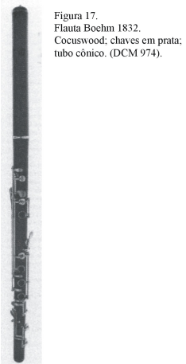
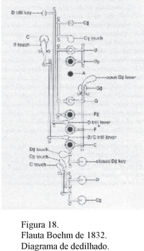
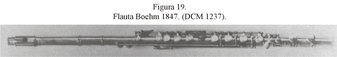
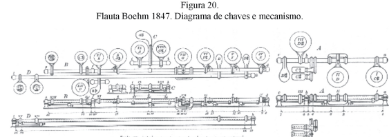
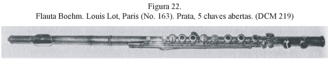

A influência de Theobald Boehm
Os problemas da flauta tornaram-se mais notados a partir do momento em que o instrumento passou a ter maior destaque e popularidade, por ter se tornado um instrumento de cunho solístico e não mais apenas camerístico. Também, dada sua maior utilização na orquestra, suas discrepâncias no contexto orquestral e, particularmente, em comparação com a flexibilidade das cordas, foram ainda mais reveladas. Ainda mais graves eram seus problemas com relação ao volume e qualidade sonoras.
Com a mudança cultural ocorrida na Europa, saindo de sua cultura aristocrata e entrando numa cultura democrática, a música também mudou dos salões das cortes para as salas de concertos: a orquestra de câmera transforma-se numa orquestra sinfônica completa. O volume, poder e brilhantismo da sonoridade sintetizam a expressão musical, tanto do ponto de vista composicional quanto de execução.
A flauta de madeira do “sistema Alemão” claramente não preenchia as expectativas do século XIX: sua afinação era incerta; a sonoridade, suave e adequada para a música de câmera, era fraca e não servia às necessidades solísticas dentro da orquestra; e a dinâmica não era suficiente para competir com o naipe de metais, que muito havia melhorado na orquestra romântica. A situação teria se tornado crítica para o instrumento, não fosse a genialidade de Theobald Boehm (1794-1881), que foi o primeiro a aplicar conceitos científicos na construção da flauta.
A maior crítica de Boehm à flauta Alemã da época era em relação à sua acústica. Ele apontava os fabricantes como os responsáveis: como desconheciam princípios acústicos, colocavam os orifícios em posições que pudessem ser alcançadas pelos dedos; mesmo com a adoção de chaves para se obter os tons cromáticos no instrumento, os orifícios foram mantidos em seus locais originais, assim como possuiam um diâmetro insuficiente que, além de dificultar a emissão das notas agudas, proporcionava uma perda de clareza e intensidade em toda a extensão do instrumento.
Boehm concluiu que mudanças em detalhes mecânicos não seriam suficientes para corrigir as deficiências do sistema e que, somente através de um novo sistema de dedilhados a flauta teria, então, seus problemas corrigidos. Embora o novo sistema fosse totalmente novo, Boehm utilizou-se de experimentos e invenções anteriores para desenhar seu novo instrumento: grandes orifícios posicionados de acordo com seus princípios acústicos e não pela conveniência de dedilhado, e o sistema mecânico, com chaves, para possibilitar ao instrumentista controlar orifícios distantes.
O primeiro modelo desse instrumento apareceu em 1831 e era basicamente o mesmo instrumento utilizado à época. Havia somente duas mudanças significativas. Uma delas já introduzia o conceito do posicionamento dos orifícios em seus locais acusticamente corretos: o orifício do A havia sido trazido mais para baixo em relação à posição até então utilizada, e um sistema de chaves abertas foi empregado para controlá-lo. A outra inovação era um sistema de chaves com juntas-duplas, que permitiam fechar dois orifícios simultaneamente. Essa inovação provocou uma alteração significativa no dedilhado, pois o F# era agora produzido pelo terceiro dedo da mão direita, ao invés do segundo, que agora proporcionava o F (Figuras 15 e 16). Com esta nova disposição F/F#, a flauta perdia a simplicidade do sistema antigo e também sua naturalidade quanto à sua escala primária (Ré maior), mas representava a primeira fase para a construção da flauta moderna.
O próximo passo foi conduzir uma série de experimentos para determinar o diâmetro dos orifícos. Após alguns insucessos, Boehm lançou, em 1832, um novo modelo cujo desenho era ainda mais inovador e exigia ainda mais alterações de dedilhados. Com a necessidade de redimensionar os orifícos, um novo arranjo para os mesmos teve de ser encontrado. Também havia a necessidade de ser controlar quatorze orifícios com somente nove dedos. A solução encontrada foi estabelecer o uso de anéis de metal, que não tinham função acústica, mas proporcionavam o controle de diferentes chaves simultaneamente, sem a necessidade de deslocar os dedos de suas posições iniciais, para manter o dedilhado o mais similiar possível ao antigo sistema.
 Apesar de Boehm tê-lo apresentado em público em concertos em Munique em Novembro de 1832 e Abril de 1833, foi somente a partir de 1837 que o novo instrumento começou a ganhar aceitação entre os flautistas. Embora sofrendo várias críticas, o novo sistema de dedilhado foi sendo, aos poucos, aceito. Vários fabricantes começaram a efetuar ou sugerir modificações em seus próprios instrumentos a partir do modelo de Theobald Boehm. Em 1843, Boehm tomou medidas oficiais para tornar Rudall & Rose, em Londres, e Clair Godfreoy, em Paris, os construtores autorizados a fabricarem seu modelo.
Após estudar acústica na Universidade de Munique, Boehm começou a desenvolver experimentos que o levou a efetuar outras modificações na flauta. Seguindo sua intuição e empregando seus conhecimentos sobre acústica, Boehm começou seus experimentos seguindo a hipótese de que o formato cônico do instrumento deveria ser alterado, uma vez que ele não encontrava explicações para justificar a razão pela qual a flauta era o único instrumento tocado pela extremidade mais larga, dentre todos os instrumentos de formato cônico. Para esses experimentos, Boehm construiu vários tubos cilíndricos, mas tendo enfrentando severas dificuldades com a instabilidade gerada pela madeira, foi forçado a substituir a madeira pelo metal, para obter maior consistência e confiabilidade.
Os experimentos confirmaram as dúvidas levantadas em relação à conicidade do tubo e Boehm pôde, então, formular os princípios fundamentais para construir seu novo instrumento. A flauta de 1847, construída em prata, tinha seu corpo cilíndrico, com diâmetro de 19 milímetros. O furo para a cabeça do instrumento, tinha diâmetro de 17 milímetros na altura da rolha, e gradualmente aumentava até chegar à altura do corpo, e foi descrito por Boehm como sendo “parabólico”. Alguns ajustes foram feitos para adequar o diâmetro dos orifícios ao novo diâmetro e formato do tubo e, após determinar as proporções exatas entre estes diâmetros, Boehm registrou-os em um diagrama geométrico, cuja leitura proporcionava a dimensão exata para qualquer flauta, não importando em que base de afinação fosse construída.
 O Schema (Figura 21) foi submetido ao juri da Exposição de Paris de 1868 para consideração, mas este julgou-se despreparado para avaliá-lo. Não fosse por sua publicação pela Sociedade Politécnica da Bavaria, em 1886, o Schema seria totalmente ignorado.

Em 1847, Teobald Boehm vendeu os direitos de fabricação de seu último modelo a Rudall & Rose, de Londres. A patente para a França foi vendida para Clair Godfroy e para seu enteado, Louis Lot. Os franceses, em 1848, fabricaram modelos que reintroduziram perfurações nas chaves de A, G, F#, E e D, para proporcionar uma maior ventilação aos orifícios. Este modelo, subsequentemente, tornou-se conhecido como de “chaves abertas” ou “Modelo Francês” (Figura 22)
